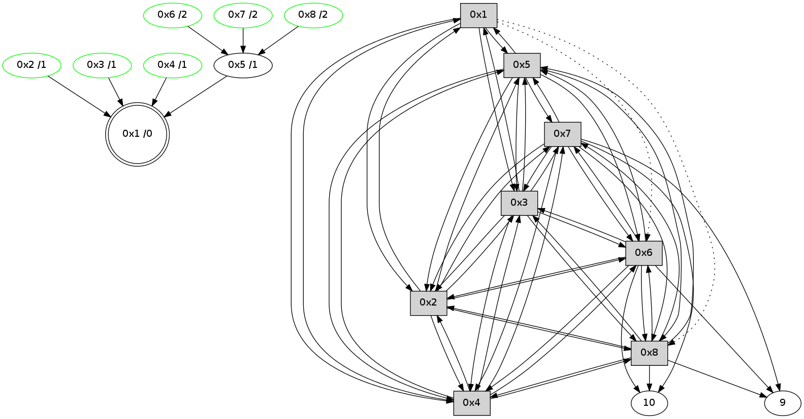

>> << IDX [start] -100 -25 -5 +0 +5 +25 +100 [395.009444952]
 Previous packets
----------------------------------------------------------------------
390.250491 beacon01(11f6) #0 coord=01,02,03,04,05,06,07,08,0a,09 cycle=688.0ms assoc
-- color-indic=0 64 5e 9b
390.260667 beacon02(11f6) #0 coord=01,02,03,04,05,06,07,08,0a,09 cycle=688.0ms assoc 64 cd aa
390.270626 beacon03(11f6) #0 coord=01,02,03,04,05,06,07,08,0a,09 cycle=688.0ms assoc 64 b7 e7
390.280626 beacon04(11f6) #0 coord=01,02,03,04,05,06,07,08,0a,09 cycle=688.0ms assoc 64 c0 0d
390.290627 beacon05(11f6) #0 coord=01,02,03,04,05,06,07,08,0a,09 cycle=688.0ms assoc 64 ba 40
390.300626 beacon06(11f6) #0 coord=01,02,03,04,05,06,07,08,0a,09 cycle=688.0ms assoc 64 34 97
390.310627 beacon07(11f6) #0 coord=01,02,03,04,05,06,07,08,0a,09 cycle=688.0ms assoc 64 4e da
390.320630 beacon08(11f6) #0 coord=01,02,03,04,05,06,07,08,0a,09 cycle=688.0ms assoc 64 cb 4b
390.460709 [Hello(1): seq=195 sym=5,3,2,4 asym=8,6 sysInfo= stat=5:8,0,1,1/3:13,0,0,12/2:8,0,15,13/4:11,0,0,13/8:9,0,13,1/6:6,0,14,11]
----------------------------------------------------------------------
391.038626 beacon01(11f6) #0 coord=01,02,03,04,05,06,07,08,0a,09 cycle=688.0ms assoc
-- color-indic=0 64 8a ae
391.048797 beacon02(11f6) #0 coord=01,02,03,04,05,06,07,08,0a,09 cycle=688.0ms assoc 64 19 9f
391.058761 beacon03(11f6) #0 coord=01,02,03,04,05,06,07,08,0a,09 cycle=688.0ms assoc 64 63 d2
391.068761 beacon04(11f6) #0 coord=01,02,03,04,05,06,07,08,0a,09 cycle=688.0ms assoc 64 14 38
391.078762 beacon05(11f6) #0 coord=01,02,03,04,05,06,07,08,0a,09 cycle=688.0ms assoc 64 6e 75
391.088761 beacon06(11f6) #0 coord=01,02,03,04,05,06,07,08,0a,09 cycle=688.0ms assoc 64 e0 a2
391.098764 beacon07(11f6) #0 coord=01,02,03,04,05,06,07,08,0a,09 cycle=688.0ms assoc 64 9a ef
391.108765 beacon08(11f6) #0 coord=01,02,03,04,05,06,07,08,0a,09 cycle=688.0ms assoc 64 1f 7e
391.157204 [Hello(4): seq=195 sym=1,2,5,6,3,8,7 sysInfo= stat=1:2,0,2,0/2:9,0,0,12/5:12,0,1,1/6:1,0,15,11/3:13,0,14,10/8:6,0,12,1/7:12,0,15,10]
391.174301 [Hello(5): seq=195 sym=1,2,7,6,3,8,4 sysInfo= stat=1:3,0,1,0/2:8,0,15,12/7:10,0,15,10/6:3,0,14,11/3:10,0,0,11/8:6,0,13,1/4:11,0,15,12]
391.179560 [Hello(6): seq=195 sym=10,7,5,3,8,4,2,9 sym= sysInfo= stat=]
391.212010 [Hello(3): seq=195 sym=1,2,7,5,6,8,4 sysInfo= stat=1:3,0,1,0/2:8,0,14,13/7:7,0,15,9/5:6,0,14,1/6:1,0,15,11/8:5,0,13,1/4:12,0,0,12]
391.242261 [Hello(8): seq=195 sym=2,7,5,6,3,4,10,9 sysInfo= stat=2:4,0,14,12/7:0,0,15,10/5:15,0,15,1/6:14,0,13,10/3:10,0,14,11/4:8,0,14,11/10:11,0,9,7/9:0,0,8,2]
391.244625 [Hello(7): seq=195 sym=10,5,6,8,3,2,4,9 sysInfo= stat=10:8,0,11,8/5:0,0,0,1/6:14,0,14,11/8:11,0,14,2/3:0,0,15,11/2:14,0,13,10/4:13,0,11,9/9:7,0,15,3]
391.252638 [Hello(2): seq=195 sym=1,7,5,3,8,4,6 sysInfo= stat=1:2,0,1,0/7:7,0,15,10/5:8,0,0,1/3:8,0,14,10/8:6,0,13,1/4:8,0,0,12/6:12,0,14,11]
----------------------------------------------------------------------
391.826763 beacon01(11f6) #0 coord=01,02,03,04,05,06,07,08,0a,09 cycle=688.0ms assoc
-- color-indic=0 64 36 ab
391.836940 beacon02(11f6) #0 coord=01,02,03,04,05,06,07,08,0a,09 cycle=688.0ms assoc 64 a5 9a
391.846899 beacon03(11f6) #0 coord=01,02,03,04,05,06,07,08,0a,09 cycle=688.0ms assoc 64 df d7
391.856899 beacon04(11f6) #0 coord=01,02,03,04,05,06,07,08,0a,09 cycle=688.0ms assoc 64 a8 3d
391.866899 beacon05(11f6) #0 coord=01,02,03,04,05,06,07,08,0a,09 cycle=688.0ms assoc 64 d2 70
391.876899 beacon06(11f6) #0 coord=01,02,03,04,05,06,07,08,0a,09 cycle=688.0ms assoc 64 5c a7
391.886901 beacon07(11f6) #0 coord=01,02,03,04,05,06,07,08,0a,09 cycle=688.0ms assoc 64 26 ea
391.896903 beacon08(11f6) #0 coord=01,02,03,04,05,06,07,08,0a,09 cycle=688.0ms assoc 64 a3 7b
392.079560 [Hello(1): seq=196 sym=5,3,2,4 asym=8,6 sysInfo= stat=5:9,0,1,1/3:14,0,0,12/2:9,0,15,13/4:12,0,0,13/8:10,0,13,1/6:7,0,14,11]
392.082056 [STC(1) #0.19 new-neigh,to-color d=0]
----------------------------------------------------------------------
392.614900 beacon01(11f6) #0 coord=01,02,03,04,05,06,07,08,0a,09 cycle=688.0ms assoc
-- color-indic=0 64 f2 a5
392.625061 beacon02(11f6) #0 coord=01,02,03,04,05,06,07,08,0a,09 cycle=688.0ms assoc 64 61 94
392.635034 beacon03(11f6) #0 coord=01,02,03,04,05,06,07,08,0a,09 cycle=688.0ms assoc 64 1b d9
392.645035 beacon04(11f6) #0 coord=01,02,03,04,05,06,07,08,0a,09 cycle=688.0ms assoc 64 6c 33
392.655035 beacon05(11f6) #0 coord=01,02,03,04,05,06,07,08,0a,09 cycle=688.0ms assoc 64 16 7e
392.665035 beacon06(11f6) #0 coord=01,02,03,04,05,06,07,08,0a,09 cycle=688.0ms assoc 64 98 a9
392.675036 beacon07(11f6) #0 coord=01,02,03,04,05,06,07,08,0a,09 cycle=688.0ms assoc 64 e2 e4
392.685040 beacon08(11f6) #0 coord=01,02,03,04,05,06,07,08,0a,09 cycle=688.0ms assoc 64 67 75
392.723391 [Hello(4): seq=196 sym=1,2,5,6,3,8,7 sysInfo= stat=1:3,0,3,0/2:10,0,0,12/5:13,0,1,1/6:2,0,15,11/3:14,0,14,10/8:7,0,12,1/7:13,0,15,10]
392.726283 [STC(4)->1 #0.19 new-neigh,stable,to-color d=1]
392.727946 [TreeStatus(4)-.->1 #0.19 new-neigh,stable child=1]
392.731449 [Hello(5): seq=196 sym=1,2,7,6,3,8,4 sym= sysInfo= stat=]
392.736239 [STC(5)->1 #0.19 new-neigh,to-color d=1]
392.786729 [Hello(6): seq=196 sym=10,7,5,3,8,4,2,9 sysInfo= stat=10:7,0,9,7/7:2,0,15,10/5:14,0,1,1/3:14,0,15,12/8:9,0,14,2/4:3,0,14,12/2:1,0,13,10/9:12,0,15,3]
392.791357 [STC(6)->5-.->1 #0.19 new-neigh,stable,to-color d=2]
392.793305 [TreeStatus(6)-.->1 #0.19 new-neigh,stable child=1]
392.799953 [Hello(3): seq=196 sym=1,2,7,5,6,8,4 sysInfo= stat=1:4,0,2,0/2:9,0,14,13/7:8,0,15,9/5:6,0,15,1/6:2,0,0,12/8:6,0,13,1/4:13,0,1,13]
392.802546 [STC(3)->1 #0.19 new-neigh,stable,to-color d=1]
392.805767 [TreeStatus(3)-.->1 #0.19 new-neigh,stable child=1]
392.837287 [Hello(8): seq=196 sym=2,7,5,6,3,4,10,9 sysInfo= stat=2:5,0,14,12/7:2,0,15,10/5:15,0,0,1/6:15,0,14,11/3:11,0,15,12/4:9,0,15,12/10:12,0,9,7/9:0,0,8,2]
392.842246 [STC(8)->5-.->1 #0.19 new-neigh,stable,to-color d=2]
392.843909 [TreeStatus(8)-.->1 #0.19 new-neigh,stable child=2]
392.850363 [Hello(2): seq=196 sym=1,7,5,3,8,4,6 sysInfo= stat=1:3,0,2,0/7:7,0,15,10/5:8,0,1,1/3:9,0,15,11/8:7,0,14,2/4:9,0,1,13/6:13,0,15,12]
392.855176 [STC(2)->1 #0.19 new-neigh,stable,to-color d=1]
392.856838 [TreeStatus(2)-.->1 #0.19 new-neigh,stable child=1]
----------------------------------------------------------------------
393.403036 beacon01(11f6) #0 coord=01,02,03,04,05,06,07,08,0a,09 cycle=688.0ms assoc
-- color-indic=0 64 4e a0
393.413203 beacon02(11f6) #0 coord=01,02,03,04,05,06,07,08,0a,09 cycle=688.0ms assoc 64 dd 91
393.423171 beacon03(11f6) #0 coord=01,02,03,04,05,06,07,08,0a,09 cycle=688.0ms assoc 64 a7 dc
393.433172 beacon04(11f6) #0 coord=01,02,03,04,05,06,07,08,0a,09 cycle=688.0ms assoc 64 d0 36
393.443171 beacon05(11f6) #0 coord=01,02,03,04,05,06,07,08,0a,09 cycle=688.0ms assoc 64 aa 7b
393.453172 beacon06(11f6) #0 coord=01,02,03,04,05,06,07,08,0a,09 cycle=688.0ms assoc 64 24 ac
393.463173 beacon07(11f6) #0 coord=01,02,03,04,05,06,07,08,0a,09 cycle=688.0ms assoc 64 5e e1
393.473176 beacon08(11f6) #0 coord=01,02,03,04,05,06,07,08,0a,09 cycle=688.0ms assoc 64 db 70
393.531296 [Hello(1): seq=197 sym=5,3,2,4 asym=8,6 sysInfo= stat=5:9,0,2,1/3:15,0,1,13/2:10,0,0,14/4:13,0,1,14/8:11,0,14,2/6:8,0,15,12]
393.561484 [TreeStatus(5)-.->1 #0.19 new-neigh,stable child=6]
393.619465 [STC(7)->5-.->1 #0.19 new-neigh,stable,to-color d=2]
----------------------------------------------------------------------
394.191173 beacon01(11f6) #0 coord=01,02,03,04,05,06,07,08,0a,09 cycle=688.0ms assoc
-- color-indic=1 64 be 47
394.201329 beacon02(11f6) #0 coord=01,02,03,04,05,06,07,08,0a,09 cycle=688.0ms assoc 64 2d 76
394.211307 beacon03(11f6) #0 coord=01,02,03,04,05,06,07,08,0a,09 cycle=688.0ms assoc 64 57 3b
394.221308 beacon04(11f6) #0 coord=01,02,03,04,05,06,07,08,0a,09 cycle=688.0ms assoc 64 20 d1
394.231308 beacon05(11f6) #0 coord=01,02,03,04,05,06,07,08,0a,09 cycle=688.0ms assoc 64 5a 9c
394.241308 beacon06(11f6) #0 coord=01,02,03,04,05,06,07,08,0a,09 cycle=688.0ms assoc 64 d4 4b
394.251308 beacon07(11f6) #0 coord=01,02,03,04,05,06,07,08,0a,09 cycle=688.0ms assoc 64 ae 06
394.261312 beacon08(11f6) #0 coord=01,02,03,04,05,06,07,08,0a,09 cycle=688.0ms assoc 64 2b 97
394.327893 [Hello(8): seq=197 sym=2,7,5,6,3,4,10,9 sysInfo=coloring-mode-on,ColoringModeIndicationCalled stat=2:7,0,15,13/7:2,0,0,10/5:15,0,0,2/6:15,0,14,11/3:11,0,15,12/4:9,0,15,12/10:13,0,10,7/9:1,0,8,2]
394.330474 [Hello(3): seq=197 sym=1,2,7,5,6,8,4 sysInfo=coloring-mode-on,ColoringModeIndicationCalled stat=1:5,0,2,0/2:11,0,15,14/7:8,0,0,9/5:6,0,15,2/6:2,0,0,12/8:7,0,14,2/4:13,0,1,13]
394.345202 [Hello(4): seq=197 sym=1,2,5,6,3,8,7 sysInfo=coloring-mode-on,ColoringModeIndicationCalled stat=1:4,0,3,0/2:12,0,1,13/5:13,0,2,2/6:3,0,0,12/3:0,0,15,11/8:9,0,13,2/7:13,0,0,10]
394.402237 PARSE ERROR************************
Traceback (most recent call last):
File "PacketAnalysis.py", line 167, in showOperaPacket
structPacket = OperaPacketParse.parsePacket(rawPacket)
File "/home/user/HgRep/OCARI-2014/Sniffer-OPERA/OperaPacketParse.py", line 461, in parsePacket
return parseHelloMessage(data)
File "/home/user/HgRep/OCARI-2014/Sniffer-OPERA/OperaPacketParse.py", line 127, in parseHelloMessage
assert struct.calcsize("H")*len(neighAddrList) == len(linkList)
AssertionError
48 30 07 00 00 c5 00 02 02 10 0a 00 05 00 06 00 08 00 03 00 02 00 04 00 09 00 53 04 00 14 00 00 4c 10 8c 0a 21 00 cf 0f 3f 0d c0 02 be 01 ac 0f 30 09 4c 2a
394.429875 [Hello(5): seq=197 sym=1,2,7,6,3,8,4 sysInfo=coloring-mode-on,ColoringModeIndicationCalled stat=1:5,0,2,0/2:11,0,0,13/7:12,0,0,10/6:5,0,15,12/3:13,0,1,12/8:9,0,14,2/4:12,0,15,12]
394.438891 [Hello(6): seq=197 sym=10,7,5,3,8,4,2,9 sym= sysInfo=coloring-mode-on,ColoringModeIndicationCalled stat=]
----------------------------------------------------------------------
394.979309 beacon01(11f6) #0 coord=01,02,03,04,05,06,07,08,0a,09 cycle=688.0ms assoc
-- color-indic=1 64 02 42
394.989468 beacon02(11f6) #0 coord=01,02,03,04,05,06,07,08,0a,09 cycle=688.0ms assoc 64 91 73
394.999444 beacon03(11f6) #0 coord=01,02,03,04,05,06,07,08,0a,09 cycle=688.0ms assoc 64 eb 3e